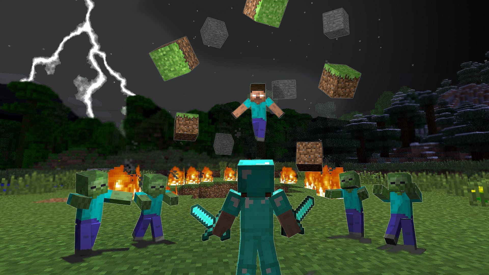
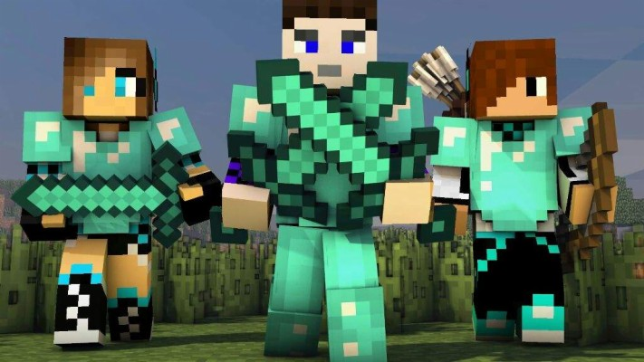
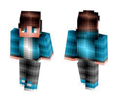
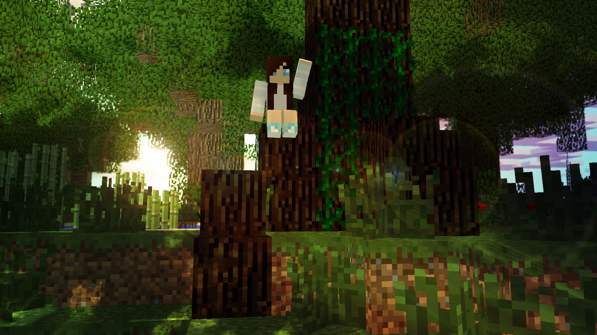

¿COMO CREAR MI PROPIO PERSONAJE?

Para crear un personaje y hacerlo importante en la historia del lore del servidor, tienes que seguir estos pasos:
1. TEN CLARO LA IDEA
Si queremos un personaje tenemos que tener todas las características claras del personaje y al menos tener una imagen ilustrativa de este. Es recomendable
tener escrito dichas características en una memoria (documento o libreta) junto con alguna que otra foto ilustrativa.
2. CREA LA SKIN DEL PERSONAJE

Obviamente tu personaje debe ser visible por el publico y por lo tanto hay que diseñar una skin del personaje.
SKINDEX
3. HAZ CONOCER TU PERSONAJE

Para que oficialmente recibas tu personaje, en el Discord de Minecraft en un canal llamado Describe-tu-Personaje envia el contenido de la memoria a ese canal junto a una imagen representativa y ponte tu skin en tu cuenta de minecraft para que lo vean.